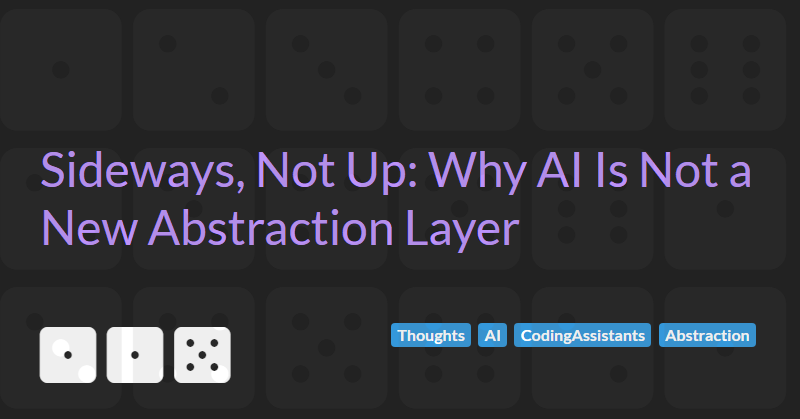

Sideways, Not Up: Why AI Is Not a New Abstraction Layer

There is a tidy story doing the rounds, and like all tidy stories it is mostly told as if it were obvious. The story goes like this. Software has always climbed a ladder of abstraction. We started with machine code, then assembly gave us mnemonics instead of raw opcodes, then high-level languages and their compilers let us write for loops and forget about registers entirely. Each rung let us say more while caring about less. And now, the story concludes, AI is simply the next rung. You describe what you want in English, the model writes the code, and one day soon you will no more read that code than you currently read the assembly your compiler emits.
It is a compelling narrative because it has a true part welded to a false part. Andrej Karpathy put the true-feeling part memorably when he declared that "the hottest new programming language is English", and earlier still framed neural networks as "Software 2.0" in which "the process of training the neural network compiles the dataset into the binary". Matt Welsh took it to its logical extreme in the Communications of the ACM, arguing that "the conventional idea of 'writing a program' is headed for extinction". The ladder, the compiler, the next layer up. It all rhymes nicely.
I write this not as a cynic, but as a software craftsperson with over 30 years of experience building, maintaining, and occasionally rescuing systems that other people's abstractions had quietly betrayed. I have a great deal of time for AI coding assistants. I use them daily. But I think the abstraction-layer framing is the wrong mental model, and getting the mental model wrong is how teams end up surprised.
If high-level languages are an abstraction over machine code, is AI really an abstraction over high-level languages, or is it something else entirely wearing the same costume?
The Ladder, and Why It Is So Seductive
Let me make the case for the other side properly, because it is stronger than the lazy version suggests.
The honest core of the argument is that programming has always been the act of compressing intent. We do not write in machine code because expressing intent that way is slow, error-prone, and unbearable. Every layer we have added has been a more humane notation for saying the same thing to the same silicon. Seen this way, natural language is just the most humane notation yet. Marc Brooker makes this point well, and disarms the obvious objection in the process. Critics say natural language is too ambiguous to be a programming medium, to which he replies that "almost all programs are already specified in natural language. And always have been." The requirements document, the ticket, the conversation with the product owner: these were always the real source, and code was merely the transcription. AI just removes a transcription step.
Martin Fowler is, as usual, the most careful voice here, and he does not undersell the magnitude of the shift. He reckons LLMs "will change software development to a similar degree as the change from assembler to the first high-level programming languages", and that "talking to the machine in prompts is as different to Ruby as Fortran to assembler". That is not a small claim, and it is not made by someone prone to hype. If you want the strongest case for the other side, that is it: a transition as significant as the one that gave us the compiler in the first place.
I agree with the magnitude. I disagree about the direction. And the difference between those two things is the whole argument.
What a Real Abstraction Actually Does
Before we can ask whether AI is a new abstraction layer, we have to be precise about what an abstraction layer is for. The point of a good abstraction is not that it hides complexity. The point is that it lets you stop thinking about the layer below. That is the load-bearing property. When I write C# and hand it to a compiler, I genuinely do not think about the IL code that is generate or the x86 instructions it emits at execution time. I do not read them. I do not review them. I do not keep a copy in case the compiler has a bad day. The abstraction has earned my trust, and that trust is what buys me the productivity.
It earns that trust through three properties that we tend to take for granted precisely because they are so reliable. It is deterministic: the same source compiled with the same compiler and flags produces the same output, every single time, which is the entire premise behind reproducible builds. It is specified: the language has a grammar and a semantics, so the translation from source to machine code is defined behaviour I can reason about, not a surprise. And it is verifiable: when something goes wrong, I can reason backwards through a defined mapping to find out why.
The Compiler Keeps Its Promises. The Model Does Not.
Here is the property that breaks the ladder. When I wrote a Fortran function in 1995, I could compile it a hundred times and get the same binary with the same bugs a hundred times. The bugs were mine, they were stable, and stability is what let me hunt them down. A large language model offers no such promise. Ask it the same question twice and you may get two different programs, because the model works by sampling tokens from a probability distribution, and sampling is, by construction, a roll of the dice.
You might assume this is just the temperature setting and that turning it to zero buys you determinism. It does not, and the reason is instructive. The team at Thinking Machines Lab demonstrated that even at temperature zero, "LLM APIs are still not deterministic in practice". They ran the same prompt through a model a thousand times at temperature zero and got eighty distinct completions, identical for the first hundred-odd tokens and then diverging. The culprit turned out not to be the usual floating-point folklore but a lack of batch invariance: the numerical result of the model's own kernels depends on how many other people's requests happen to be batched alongside yours on the server at that instant. Your output depends on a stranger's traffic. Let that sink in as a foundation to build engineering on.
Fowler saw exactly this and named it better than I could. He points out that he cannot "just store my prompts in git and know that I'll get the same behaviour each time", and then quotes his colleague Birgitta Böckeler with the line that gives this article its title:
we're not just moving up the abstraction levels, we're moving sideways into non-determinism at the same time.
That is the crux. The ladder image is wrong not because the jump is small, but because it is not a jump up. Every previous rung preserved determinism while raising expressiveness. This one trades determinism away to get expressiveness, which is a sideways move into a genuinely new and stranger place. You can call that a revolution, and I would not argue. But a revolution that abandons reproducibility is not the same kind of thing as a compiler, and pretending it is will get teams hurt.
Determinism Is Not Even the Whole Problem
Now, a sharp reader and an honest one will push back here, so let me push back on myself. The Thinking Machines work does not only diagnose the nondeterminism; it largely fixes it. With batch-invariant kernels, all thousand completions came out identical. So a determined opponent can say: fine, nondeterminism is a deployment artefact, not a law of physics, and once the inference stack is built properly your objection evaporates.
It does not evaporate, because determinism was never the deepest problem. It was the visible one. Imagine the best case: a perfectly reproducible model that returns byte-identical code for an identical prompt forever. You still do not have a specification, and you still have no correctness guarantee. A compiler is bound by a language standard; if it miscompiles conforming code, that is a bug in the compiler and the standard tells you so. A model is bound by nothing. It is not translating your English into code according to defined rules. It is predicting plausible code, and plausible is not the same as correct. You cannot reason from the prompt to the output through any defined mapping, which means you cannot do the one thing that an abstraction is supposed to let you do: stop reading the layer below.
And that is the test, restated as a challenge. A real abstraction layer lets you stop reading the layer below. Can you stop reading the code an LLM writes for you? You cannot, and you know you cannot, and the better the model gets the more dangerous it becomes to try, because the failures get rarer and subtler and more confidently wrong. Determinism would make the output stable. It would not make it trustworthy. Those are different virtues, and only one of them is on offer.
We Have Been Here Before
None of this is new, which is the part I find most telling. The dream of programming in plain English is roughly as old as programming itself. COBOL was deliberately designed in 1959 to be English-like so that managers might read it, building on Grace Hopper's FLOW-MATIC, "the first English-like data processing language". The fourth-generation languages of the 1980s were sold on exactly the promise we hear today, that they would "empower end-users, such as business analysts, to create and modify applications independently, minimizing reliance on specialized IT personnel". I wrote about how that played out in Vibe Coding: The Emperor's New Clothes, and the short version is that the English-like syntax never removed the need for someone who could think precisely about edge cases. It just made the programs longer.
The most withering verdict came from Edsger Dijkstra, writing in 1978 against that very wave of enthusiasm. His central insight was that the formal notation of programming is a feature and not a burden, because the discipline of formal symbols is exactly what stops us writing nonsense without noticing. His line has aged disgracefully well:
When all is said and told, the "naturalness" with which we use our native tongues boils down to the ease with which we can use them for making statements the nonsense of which is not obvious.
That is the deepest reason natural language is a poor abstraction and a marvellous interface, which are not the same thing. The ambiguity that makes English so wonderfully expressive is the same ambiguity that lets us, and the model, produce confident plausible rubbish whose wrongness is not obvious until production. Dijkstra signed off with a prophecy that machines programmed in our native tongues would be "as damned difficult to make as they would be to use". Brooker, to his credit, argues 2025 has finally built them. I would say we have built something extraordinary that is nonetheless exactly as difficult to use safely as Dijkstra warned.
What This Means
I want to be careful not to swing from over-claim to dismissal, because the tool in front of us is genuinely remarkable. So here is where I land.
Prompting an LLM is a powerful new interface to the act of producing code. It is probably the most significant change to how we work since the IDE, and arguably since the high-level language. But an interface is not an abstraction layer. The defining promise of an abstraction layer is that you may forget what is beneath it, and AI cannot make that promise, today or in principle, because it offers neither a specification you can reason against nor a guarantee you can rely on. What it offers instead is a brilliant, fast, occasionally brilliant-and-wrong draft that you remain wholly responsible for. The code it generates is still your code. You own it, you review it, you debug it, you maintain it at three in the morning when it falls over. That is not what owning compiler output feels like, and the gap between those two feelings is the entire point.
This is also why I keep coming back to the idea that the durable skill is no longer typing the code but specifying and verifying it, which I explored in Is Spec-Centric Development the Future?. If the model writes the first draft, then the human's value moves to the parts the model cannot be trusted with: the precise specification of what is wanted, and the disciplined verification that the draft actually delivers it. Tests, types, reviews, and observability stop being hygiene and start being the load-bearing walls. The model raised the ceiling on how fast we can produce code. It did nothing whatsoever to lower the floor on how carefully we must check it.
Conclusion
The compiler earned the right to be called an abstraction layer by keeping its promises so reliably that we forgot it was making them. It is deterministic, specified, and verifiable, and so we stopped reading what it produced. The AI assistant on my screen this morning is faster, friendlier, and far more impressive than any compiler, and it keeps none of those promises. It moves us sideways into nondeterminism, not up the ladder, and it hands us back a draft we are still on the hook for.
Use it. I do, gladly. Just do not mistake the friendly voice for a layer you can stop watching.
An abstraction you cannot stop checking is not an abstraction. It is just more code, wearing a better disguise.